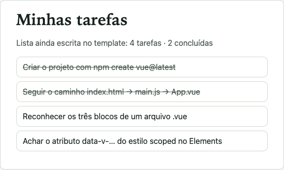

Desafio: ler o projeto Vue arquivo por arquivo
O projeto criado no Módulo 2 (etapa 05) já funciona. Hoje você explica como: quem o navegador recebe, onde o Vue começa e o que o Vite faz com um arquivo .vue.
| Critério | Evidência |
|---|---|
Seguir index.html → main.js → App.vue | Cada seta explicada com uma linha de código |
Distinguir estilo global e scoped | As duas regras apontadas no Elements |
| Ler um aviso do Vue | Tela em branco diagnosticada pelo Console |
index.html do projeto. Onde está a lista de tarefas? Se ela não
está lá, de onde vem?
Quem carrega quem: do index.html ao App.vue
| Arquivo | Quem usa | Papel |
|---|---|---|
vite.config.js | Vite (Node) | Plugin que entende .vue, Vue DevTools, atalho @ → src |
src/assets/main.css | Navegador | Estilo global: tokens de cor (claro/escuro), espaços, botões |
package.json | npm | vue em dependencies; vite em devDependencies |
Três observações com npm run dev
<div id="app"></div><div id="app" data-v-app="">
<main data-v-7a7a37b1 class="cartao">
<h1 data-v-7a7a37b1>Minhas tarefas</h1> …
Altere o texto de uma tarefa no App.vue e salve sem recarregar: a página muda sozinha (Hot Module Replacement).
GET /src/App.vue → 200 Content-Type: text/javascript
function _sfc_render(_ctx, _cache) {
return (_openBlock(), _createElementBlock("main", _hoisted_1, [
_createStaticVNode("<h1 data-v-7a7a37b1>Minhas tarefas</h1>…")
]))
}
export default _export_sfc(_sfc_main, [['render', _sfc_render],
['__scopeId', "data-v-7a7a37b1"]])cd etapas/08-projeto-sfc
npm ci
npm run devObserveO navegador pediu App.vue e recebeu JavaScript. Quem fez a troca?
Prática: estilo global × estilo scoped
- 1
- No
<style scoped>doApp.vue, acrescenteh1 { color: var(--cor-primaria) }. - 2
- Em
src/assets/main.css, mude--cor-primaria. O que acontece com o título? - 3
- No Elements, selecione o
<h1>e compare as duas regras no painel Styles. - Evidência
- A regra do
App.vuetem[data-v-…]; a domain.css, não.
Dica
main.css é importado no main.js: vale para a página toda. O scoped vale só para os elementos daquele componente.
Mostrar solução (após a tentativa)
A regra aparece como h1[data-v-7a7a37b1]. O Vite acrescenta o atributo nos elementos do componente e no seletor — por isso ela não alcança h1 de outros componentes.
// Ponto de entrada do JavaScript: o index.html carrega este arquivo.
import { createApp } from 'vue'
import App from './App.vue' // componente raiz (.vue → JS pelo Vite)
import './assets/main.css' // estilo GLOBAL: vale para a página inteira
// Cria a aplicação e a monta no <div id="app"> do index.html.
createApp(App).mount('#app')O navegador não entende .vue: o Vite traduz
Modelo: navegador pede index.html → executa main.js → createApp(App) → mount('#app') → a função de renderização desenha o DOM dentro da div.
npm run dev | npm run build |
|---|---|
| Traduz cada arquivo quando o navegador pede | Traduz tudo uma vez e gera dist/ |
| HMR e avisos do Vue | Arquivos otimizados, sem avisos |
Investigação: tela em branco, sem erro de sintaxe
[Vue warn]: Failed to mount app: mount target selector
"#App" returned null..mount('#app') trocado por .mount('#App') · npm run dev · arquivo- Provoque a troca em
src/main.jse salve. - Sintoma: página em branco. O build e o lint passam.
- Evidência: a mensagem diz qual seletor e o que voltou.
Dica
“returned null” = document.querySelector('#App') não encontrou nada. Compare com o id do index.html.
Mostrar solução (após a tentativa)
Seletores CSS diferenciam maiúsculas em ids: #App ≠ #app. Volte para #app.
Pesquisar: confira a IA com a resposta real do Vite
Explique o que acontece com um arquivo .vue entre o editor e o navegador
num projeto create-vue com Vite. Esta é a resposta real que o navegador recebeu ao
pedir /src/App.vue: [cole o início da aba Response do Network].
Aponte, nesse trecho, onde estão o template e o scoped. Não invente
arquivos que não estão no trecho.
Onde procurar
Verificação sem IA
- 1
- Qual arquivo chama
createApp, e onde a aplicação é montada? - 2
- Uma regra em
<style scoped>alcança oh1de outro componente? Por quê? - 3
- Página em branco e Console com “returned null”: o que conferir primeiro?